import numpy as np
import matplotlib.pyplot as plt
import pandas as pd
import seaborn as sns
import nltk
from nltk.corpus import stopwords
import tqdm
import spacy
from vaderSentiment.vaderSentiment import SentimentIntensityAnalyzer
from collections import CounterWeb Mining and Applied NLP (44-620)
Final Project: Article Summarizer
Student Name: Philip Fowler
Perform the tasks described in the Markdown cells below. When you have completed the assignment make sure your code cells have all been run (and have output beneath them) and ensure you have committed and pushed ALL of your changes to your assignment repository.
You should bring in code from previous assignments to help you answer the questions below.
Every question that requires you to write code will have a code cell underneath it; you may either write your entire solution in that cell or write it in a python file (.py), then import and run the appropriate code to answer the question.
- Find on the internet an article or blog post about a topic that interests you and you are able to get the text for using the technologies we have applied in the course. Get the html for the article and store it in a file (which you must submit with your project)
# This is how the data was downloaded using the Kaggle API
# The data is already in the data folder, thus, it is now commented out
# The most challenging part was to install the Kaggle API and to set up the API key
# I initially put the API key in the wrong place. usr/bin/kaggle.json is the correct location
# import kagglehub
# import shutil
# import os
# Download latest version
# path = kagglehub.dataset_download("austinreese/trump-tweets")
# Create data directory if it doesn't exist
# data_dir = "data"
# if not os.path.exists(data_dir):
# os.makedirs(data_dir)
# Move downloaded files to data directory
# for file_name in os.listdir(path):
# full_file_name = os.path.join(path, file_name)
# if os.path.isfile(full_file_name):
# shutil.move(full_file_name, data_dir)
# print("Files have been moved to the data folder.")# Load the CSV file into a dataframe
df_trump_tweets = pd.read_csv('data/realdonaldtrump.csv')
print(df_trump_tweets.head()) id link \
0 1698308935 https://twitter.com/realDonaldTrump/status/169...
1 1701461182 https://twitter.com/realDonaldTrump/status/170...
2 1737479987 https://twitter.com/realDonaldTrump/status/173...
3 1741160716 https://twitter.com/realDonaldTrump/status/174...
4 1773561338 https://twitter.com/realDonaldTrump/status/177...
content date \
0 Be sure to tune in and watch Donald Trump on L... 2009-05-04 13:54:25
1 Donald Trump will be appearing on The View tom... 2009-05-04 20:00:10
2 Donald Trump reads Top Ten Financial Tips on L... 2009-05-08 08:38:08
3 New Blog Post: Celebrity Apprentice Finale and... 2009-05-08 15:40:15
4 "My persona will never be that of a wallflower... 2009-05-12 09:07:28
retweets favorites mentions hashtags
0 510 917 NaN NaN
1 34 267 NaN NaN
2 13 19 NaN NaN
3 11 26 NaN NaN
4 1375 1945 NaN NaN # Select the columns 'content' and 'date' from the dataframe
df_content_date = df_trump_tweets[['content', 'date']]
# Save the selected columns to an HTML file
df_content_date.to_html('trumptweets.html', index=False)Before we jump right into the questions. Let’s take a look at the data we will be working with.
df_trump_tweets.describe()| id | retweets | favorites | |
|---|---|---|---|
| count | 4.335200e+04 | 43352.000000 | 43352.000000 |
| mean | 6.418822e+17 | 6264.766908 | 26234.241788 |
| std | 3.270437e+17 | 11120.363335 | 47705.445640 |
| min | 1.698309e+09 | 0.000000 | 0.000000 |
| 25% | 3.645313e+17 | 27.000000 | 30.000000 |
| 50% | 5.852812e+17 | 396.500000 | 369.000000 |
| 75% | 9.076133e+17 | 10753.000000 | 45784.000000 |
| max | 1.273443e+18 | 302269.000000 | 835575.000000 |
df_trump_tweets.info()<class 'pandas.core.frame.DataFrame'>
RangeIndex: 43352 entries, 0 to 43351
Data columns (total 8 columns):
# Column Non-Null Count Dtype
--- ------ -------------- -----
0 id 43352 non-null int64
1 link 43352 non-null object
2 content 43352 non-null object
3 date 43352 non-null object
4 retweets 43352 non-null int64
5 favorites 43352 non-null int64
6 mentions 20386 non-null object
7 hashtags 5583 non-null object
dtypes: int64(3), object(5)
memory usage: 2.6+ MB# Load the CSV file into a dataframe
df_trump_tweets = pd.read_csv('data/realdonaldtrump.csv')
# Ensure the 'date' column is in datetime format
df_trump_tweets['date'] = pd.to_datetime(df_trump_tweets['date'])
# Sort the DataFrame by date
df_trump_tweets = df_trump_tweets.sort_values('date')
# Plot the retweets and favorites over time
plt.figure(figsize=(12, 6))
plt.plot(df_trump_tweets['date'], df_trump_tweets['retweets'], label='Retweets', marker='o')
plt.plot(df_trump_tweets['date'], df_trump_tweets['favorites'], label='Favorites', marker='o')
# Add titles and labels
plt.title('Retweets and Favorites Over Time')
plt.xlabel('Date')
plt.ylabel('Count')
plt.legend()
plt.grid(True)
plt.xticks(rotation=-45)
# Show the plot
plt.show()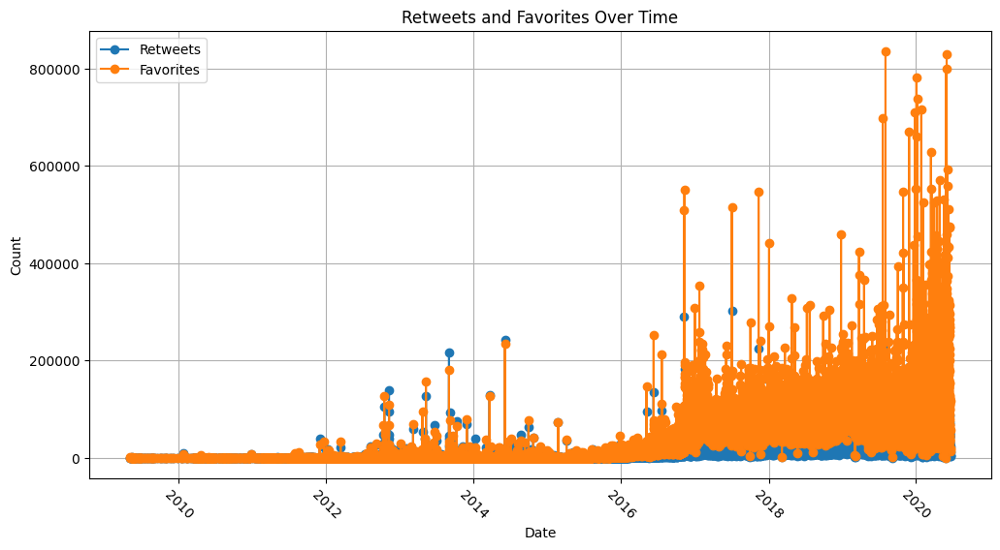
It certainly looks like President Trump started to get a lot of retweets after he was elected in 2016.
# Ensure the 'date' column is in datetime format
df_trump_tweets['date'] = pd.to_datetime(df_trump_tweets['date'])
# Extract the year from the 'date' column
df_trump_tweets['year'] = df_trump_tweets['date'].dt.year
# Calculate the number of tweets per year
tweets_per_year = df_trump_tweets.groupby('year').size()
# Display the number of tweets per year
print(tweets_per_year)year
2009 56
2010 143
2011 869
2012 4193
2013 8203
2014 6001
2015 7707
2016 3945
2017 2231
2018 3001
2019 4590
2020 2413
dtype: int64# Ensure the 'date' column is in datetime format
df_trump_tweets['date'] = pd.to_datetime(df_trump_tweets['date'])
# Calculate the number of tweets per day
tweets_per_day = df_trump_tweets.groupby(df_trump_tweets['date'].dt.date).size()
# Display the number of tweets per day
print(tweets_per_day)
# Optionally, plot the number of tweets per day
plt.figure(figsize=(12, 6))
tweets_per_day.plot(kind='line')
plt.title('Number of Tweets Per Day')
plt.xlabel('Date')
plt.ylabel('Number of Tweets')
plt.grid(True)
plt.xticks(rotation=45)
plt.show()date
2009-05-04 2
2009-05-08 2
2009-05-12 2
2009-05-13 1
2009-05-14 1
..
2020-06-13 19
2020-06-14 7
2020-06-15 8
2020-06-16 8
2020-06-17 5
Length: 3309, dtype: int64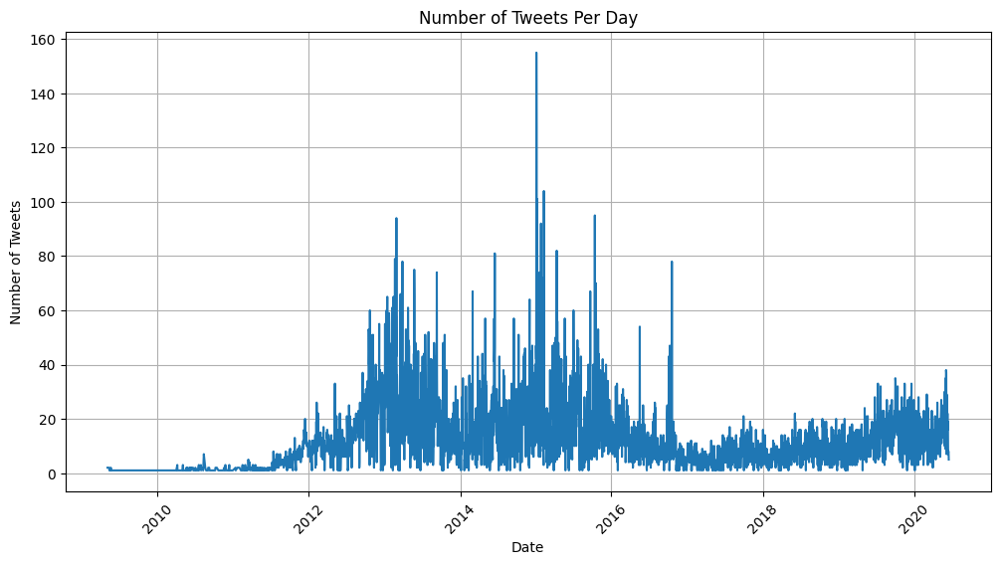
So Trump tweeted more often before his election and was retweeted more often afterwards. Interesting.
# Calculate the length of each tweet
df_trump_tweets['tweet_length'] = df_trump_tweets['content'].apply(len)
# Calculate the average length of the tweets
average_tweet_length = df_trump_tweets['tweet_length'].mean()
# Calculate the minimum length of the tweets
min_tweet_length = df_trump_tweets['tweet_length'].min()
# Calculate the maximum length of the tweets
max_tweet_length = df_trump_tweets['tweet_length'].max()
# Calculate the median length of the tweets
median_tweet_length = df_trump_tweets['tweet_length'].median()
# Calculate the mode length of the tweets
mode_tweet_length = df_trump_tweets['tweet_length'].mode()[0]
# Calculate the range of the tweet lengths
range_tweet_length = max_tweet_length - min_tweet_length
# Display the statistics
print(f"Average length of tweets: {average_tweet_length:.2f} characters")
print(f"Minimum length of tweets: {min_tweet_length} characters")
print(f"Maximum length of tweets: {max_tweet_length} characters")
print(f"Median length of tweets: {median_tweet_length} characters")
print(f"Mode length of tweets: {mode_tweet_length} characters")
print(f"Range of tweet lengths: {range_tweet_length} characters")Average length of tweets: 131.53 characters
Minimum length of tweets: 4 characters
Maximum length of tweets: 406 characters
Median length of tweets: 130.0 characters
Mode length of tweets: 140 characters
Range of tweet lengths: 402 characters- Read in your article’s html source from the file you created in question 1 and do sentiment analysis on the article/post’s text (use
.get_text()). Print the polarity score with an appropriate label. Additionally print the number of sentences in the original article (with an appropriate label)
# Initialize the VADER sentiment analyzer
analyzer = SentimentIntensityAnalyzer()
# Function to calculate sentiment
def get_vader_sentiment(text):
sentiment = analyzer.polarity_scores(text)
return sentiment['compound']
# Apply the function to the 'content' column and create a new column 'vader_sentiment'
df_trump_tweets['vader_sentiment'] = df_trump_tweets['content'].apply(get_vader_sentiment)
# Display the DataFrame
print(df_trump_tweets[['content', 'vader_sentiment']].head())
print(df_trump_tweets[['content', 'vader_sentiment']].tail()) content vader_sentiment
0 Be sure to tune in and watch Donald Trump on L... 0.5255
1 Donald Trump will be appearing on The View tom... 0.7712
2 Donald Trump reads Top Ten Financial Tips on L... 0.6468
3 New Blog Post: Celebrity Apprentice Finale and... 0.0000
4 "My persona will never be that of a wallflower... 0.0000
content vader_sentiment
43347 Joe Biden was a TOTAL FAILURE in Government. H... -0.7469
43348 Will be interviewed on @ seanhannity tonight a... 0.5411
43349 pic.twitter.com/3lm1spbU8X 0.0000
43350 pic.twitter.com/vpCE5MadUz 0.0000
43351 pic.twitter.com/VLlc0BHW41 0.0000# There is no point analyzing the rows that contain pic.twitter.com can't do much with that.
# Count the number of rows containing 'pic.twitter.com'
count = df_trump_tweets['content'].str.contains('pic.twitter.com').sum()
print(f"Number of rows containing 'pic.twitter.com': {count}")Number of rows containing 'pic.twitter.com': 3685#let's delete the rows containing 'pic.twitter.com'
df_trump_tweets = df_trump_tweets[~df_trump_tweets['content'].str.contains('pic.twitter.com')]
count = df_trump_tweets['content'].str.contains('pic.twitter.com').sum()
print(f"Number of rows containing 'pic.twitter.com': {count}")
print(df_trump_tweets.info())Number of rows containing 'pic.twitter.com': 0
<class 'pandas.core.frame.DataFrame'>
Index: 39667 entries, 0 to 43348
Data columns (total 11 columns):
# Column Non-Null Count Dtype
--- ------ -------------- -----
0 id 39667 non-null int64
1 link 39667 non-null object
2 content 39667 non-null object
3 date 39667 non-null datetime64[ns]
4 retweets 39667 non-null int64
5 favorites 39667 non-null int64
6 mentions 19216 non-null object
7 hashtags 4116 non-null object
8 year 39667 non-null int32
9 tweet_length 39667 non-null int64
10 vader_sentiment 39667 non-null float64
dtypes: datetime64[ns](1), float64(1), int32(1), int64(4), object(4)
memory usage: 3.5+ MB
None- Load the article text into a trained
spaCypipeline, and determine the 5 most frequent tokens (converted to lower case). Print the common tokens with an appropriate label. Additionally, print the tokens their frequencies (with appropriate labels)
# Load the English model
nlp = spacy.load('en_core_web_sm')
# Concatenate all text in the 'content' column
all_text = ' '.join(df_trump_tweets['content'].astype(str).tolist())
# Check the length of the text
text_length = len(all_text)
print(f"Text length: {text_length}")
# Increase the max_length limit
nlp.max_length = text_length + 1000 # Adding a buffer to the length
# Process the text with spacy
doc = nlp(all_text)
# Extract tokens, convert to lower case, and filter out stop words and punctuation
tokens = [token.text.lower() for token in doc if not token.is_stop and not token.is_punct]
# Get the five most common tokens
token_freq = Counter(tokens).most_common(5)
# Print the five most common tokens and their frequencies
for token, freq in token_freq:
print(f"Token: {token}, Frequency: {freq}")Text length: 5272985
Token: realdonaldtrump, Frequency: 8402
Token: great, Frequency: 6033
Token: trump, Frequency: 5541
Token: president, Frequency: 2851
Token: people, Frequency: 2568- Load the article text into a trained
spaCypipeline, and determine the 5 most frequent lemmas (converted to lower case). Print the common lemmas with an appropriate label. Additionally, print the lemmas with their frequencies (with appropriate labels).
# Load the English model
nlp = spacy.load('en_core_web_sm')
# Concatenate all text in the 'content' column
all_text = ' '.join(df_trump_tweets['content'].astype(str).tolist())
# Check the length of the text
text_length = len(all_text)
print(f"Text length: {text_length}")
# Increase the max_length limit
nlp.max_length = text_length + 1000 # Adding a buffer to the length
# Process the text with spacy
doc = nlp(all_text)
# Extract lemmas, convert to lower case, and filter out stop words and punctuation
lemmas = [token.lemma_.lower() for token in doc if not token.is_stop and not token.is_punct]
# Get the five most common lemmas
lemma_freq = Counter(lemmas).most_common(5)
# Print the five most common lemmas and their frequencies
for lemma, freq in lemma_freq:
print(f"Lemma: {lemma}, Frequency: {freq}")Text length: 5272985
Lemma: realdonaldtrump, Frequency: 8402
Lemma: great, Frequency: 6342
Lemma: trump, Frequency: 5575
Lemma: thank, Frequency: 4149
Lemma: president, Frequency: 2907- Make a list containing the scores (using tokens) of every sentence in the article, and plot a histogram with appropriate titles and axis labels of the scores. From your histogram, what seems to be the most common range of scores (put the answer in a comment after your code)?
from vaderSentiment.vaderSentiment import SentimentIntensityAnalyzer
# Load the English model
nlp = spacy.load('en_core_web_sm')
# Initialize the VADER sentiment analyzer
analyzer = SentimentIntensityAnalyzer()
# Function to calculate sentiment score for a given text using tokens
def get_token_score(text):
doc = nlp(text)
token_scores = [analyzer.polarity_scores(token.text)['compound'] for token in doc if not token.is_stop and not token.is_punct]
return sum(token_scores) / len(token_scores) if token_scores else 0
# Function to calculate sentiment score for a given text using lemmas
def get_lemma_score(text):
doc = nlp(text)
lemma_scores = [analyzer.polarity_scores(token.lemma_)['compound'] for token in doc if not token.is_stop and not token.is_punct]
return sum(lemma_scores) / len(lemma_scores) if lemma_scores else 0
# Apply the functions to the 'content' column and create new columns 'token_score' and 'lemma_score'
df_trump_tweets['token_score'] = df_trump_tweets['content'].apply(get_token_score)
df_trump_tweets['lemma_score'] = df_trump_tweets['content'].apply(get_lemma_score)
# Display the DataFrame with the new columns
print(df_trump_tweets[['content', 'token_score', 'lemma_score']].head()) content token_score lemma_score
0 Be sure to tune in and watch Donald Trump on L... 0.026517 0.026517
1 Donald Trump will be appearing on The View tom... 0.068614 0.068614
2 Donald Trump reads Top Ten Financial Tips on L... 0.044040 0.044040
3 New Blog Post: Celebrity Apprentice Finale and... 0.000000 0.000000
4 "My persona will never be that of a wallflower... 0.000000 0.000000# Plot the histogram of the token_score column
plt.hist(df_trump_tweets['token_score'], bins=20, edgecolor='black')
plt.title('Histogram of Token Scores')
plt.xlabel('Token Score')
plt.ylabel('Frequency')
plt.show()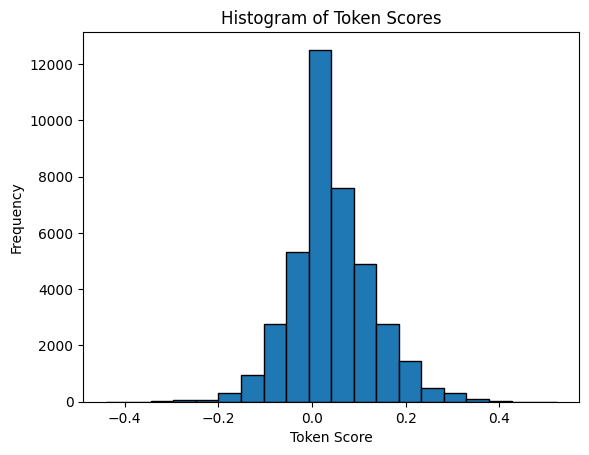
# Calculate statistics for the 'token_score' column
mean_score = df_trump_tweets['token_score'].mean()
median_score = df_trump_tweets['token_score'].median()
mode_score = df_trump_tweets['token_score'].mode()[0] # mode() returns a Series, take the first value
max_score = df_trump_tweets['token_score'].max()
min_score = df_trump_tweets['token_score'].min()
range_score = max_score - min_score
std_deviation_score = df_trump_tweets['token_score'].std()
# Print the statistics
print(f"Mean: {mean_score}")
print(f"Median: {median_score}")
print(f"Mode: {mode_score}")
print(f"Max: {max_score}")
print(f"Min: {min_score}")
print(f"Range: {range_score}")
print(f"Standard Deviation: {std_deviation_score}")Mean: 0.03968927391214934
Median: 0.02848
Mode: 0.0
Max: 0.52235
Min: -0.4404
Range: 0.96275
Standard Deviation: 0.08696466991534824- Make a list containing the scores (using lemmas) of every sentence in the article, and plot a histogram with appropriate titles and axis labels of the scores. From your histogram, what seems to be the most common range of scores (put the answer in a comment after your code)?
# Lemma score was calculated in a previous step. No reason to recalculate here.
# Plot the histogram of the lemma_score column
plt.hist(df_trump_tweets['lemma_score'], bins=20, edgecolor='black')
plt.title('Histogram of Lemma Scores')
plt.xlabel('Lemma Score')
plt.ylabel('Frequency')
plt.show()# Calculate statistics for the 'lemma_score' column
mean_score = df_trump_tweets['lemma_score'].mean()
median_score = df_trump_tweets['lemma_score'].median()
mode_score = df_trump_tweets['lemma_score'].mode()[0] # mode() returns a Series, take the first value
max_score = df_trump_tweets['lemma_score'].max()
min_score = df_trump_tweets['lemma_score'].min()
range_score = max_score - min_score
std_deviation_score = df_trump_tweets['lemma_score'].std()
# Print the statistics
print(f"Mean: {mean_score}")
print(f"Median: {median_score}")
print(f"Mode: {mode_score}")
print(f"Max: {max_score}")
print(f"Min: {min_score}")
print(f"Range: {range_score}")
print(f"Standard Deviation: {std_deviation_score}")Mean: 0.0386645034520253
Median: 0.028478571428571426
Mode: 0.0
Max: 0.52235
Min: -0.4404
Range: 0.96275
Standard Deviation: 0.08541845257232926- Using the histograms from questions 5 and 6, decide a “cutoff” score for tokens and lemmas such that fewer than half the sentences would have a score greater than the cutoff score. Record the scores in this Markdown cell
- Cutoff Score (tokens):
- Cutoff Score (lemmas):
Feel free to change these scores as you generate your summaries. Ideally, we’re shooting for at least 6 sentences for our summary, but don’t want more than 10 (these numbers are rough estimates; they depend on the length of your article).
The median is the value that defines the cutoff score if we want to divide the data into two equal parts. In this case, we want to divide the data into two parts such that fewer than half the sentences would have a score greater than the cutoff score. This means that the median is good starting point for the cutoff score.
# Calculate the median cutoff scores using the existing 'token_score' and 'lemma_score' columns
token_cutoff_score = df_trump_tweets['token_score'].median()
lemma_cutoff_score = df_trump_tweets['lemma_score'].median()
# Print the cutoff scores
print(f"Token Cutoff Score: {token_cutoff_score}")
print(f"Lemma Cutoff Score: {lemma_cutoff_score}")Token Cutoff Score: 0.02848
Lemma Cutoff Score: 0.028478571428571426- Create a summary of the article by going through every sentence in the article and adding it to an (initially) empty list if its score (based on tokens) is greater than the cutoff score you identified in question 8. If your loop variable is named
sent, you may find it easier to addsent.text.strip()to your list of sentences. Print the summary (I would cleanly generate the summary text byjoining the strings in your list together with a space (' '.join(sentence_list)).
Creating a summary of the 40 thousand trump tweets seemed like a daunting task, so I decided to summarize each month’s tweets. The cell below is meant to create the summaries for each month. Each summary is expected to be 1-2 sentences in length. I will apply the cutoff scores to the summaries that are created after all of the summaries are produced and the polarity scores are calculated in step 9. I am doing this as I want to spend some time at the end doing my own exploration. I would like summaries and scores for the whole dataset.
from transformers import pipeline, AutoTokenizer
# Set the device to CPU
# When set to GPU I encountered numerous errors. I am not sure why. I am using a GPU
device = -1
# Specify the model to use for summarization
model_name = "sshleifer/distilbart-cnn-12-6" # You can change this to any other model
# Initialize the summarization pipeline with the specified model and device
summarizer = pipeline("summarization", model=model_name, device=device)
# Initialize the tokenizer with the same model
tokenizer = AutoTokenizer.from_pretrained(model_name)
# Function to summarize text
def summarize_text(text):
if len(text.strip()) == 0:
return "No content to summarize"
# Truncate the text to the maximum sequence length
inputs = tokenizer(text, max_length=1024, truncation=True, return_tensors="pt")
truncated_text = tokenizer.decode(inputs["input_ids"][0], skip_special_tokens=True)
# Summarize the truncated text using the transformer model
summary = summarizer(truncated_text, max_length=31, min_length=25, do_sample=False)
return summary[0]['summary_text']
# Ensure the 'date' column is in datetime format
df_trump_tweets['date'] = pd.to_datetime(df_trump_tweets['date'])
# Extract month and year from the 'date' column
df_trump_tweets['month'] = df_trump_tweets['date'].dt.month
df_trump_tweets['year'] = df_trump_tweets['date'].dt.year
# Group by year and month
grouped = df_trump_tweets.groupby(['year', 'month'])
# Create a new DataFrame to store the summaries
summaries = []
for (year, month), group in grouped:
# Concatenate all text in the group
all_text = ' '.join(group['content'].astype(str).tolist())
if len(all_text.strip()) == 0:
continue
# Summarize the concatenated text
summary = summarize_text(all_text)
summaries.append({'year': year, 'month': month, 'summary': summary})
# Create the new DataFrame
df_trump_tweet_summaries = pd.DataFrame(summaries)
# Display the new DataFrame
print(df_trump_tweet_summaries.head()) year month summary
0 2009 5 Donald Trump presents the Top Ten List on Lat...
1 2009 6 Today is Donald Trump's Birthday! Send him yo...
2 2009 7 "Be aware of things that seem inexplicable be...
3 2009 8 Watch Donald Trump's recent appearance on The...
4 2009 9 "A lot of people have imagination, but can't ...- Print the polarity score of your summary you generated with the token scores (with an appropriate label). Additionally, print the number of sentences in the summarized article.
# Initialize the VADER sentiment analyzer
analyzer = SentimentIntensityAnalyzer()
# Load the English model for sentence segmentation
nlp = spacy.load('en_core_web_sm')
# Function to calculate VADER sentiment score
def get_vader_score(text):
return analyzer.polarity_scores(text)['compound']
# Function to count the number of sentences
def count_sentences(text):
doc = nlp(text)
return len(list(doc.sents))
# Apply the functions to the 'summary' column and create new columns 'vader_score' and 'number_of_sentences'
df_trump_tweet_summaries['vader_score'] = df_trump_tweet_summaries['summary'].apply(get_vader_score)
df_trump_tweet_summaries['number_of_sentences'] = df_trump_tweet_summaries['summary'].apply(count_sentences)
# Display the updated DataFrame
print(df_trump_tweet_summaries.head()) year month summary \
0 2009 5 Donald Trump presents the Top Ten List on Lat...
1 2009 6 Today is Donald Trump's Birthday! Send him yo...
2 2009 7 "Be aware of things that seem inexplicable be...
3 2009 8 Watch Donald Trump's recent appearance on The...
4 2009 9 "A lot of people have imagination, but can't ...
vader_score number_of_sentences
0 0.2023 2
1 0.5848 2
2 0.8402 1
3 0.0000 1
4 0.0000 2 - Create a summary of the article by going through every sentence in the article and adding it to an (initially) empty list if its score (based on lemmas) is greater than the cutoff score you identified in question 8. If your loop variable is named
sent, you may find it easier to addsent.text.strip()to your list of sentences. Print the summary (I would cleanly generate the summary text byjoining the strings in your list together with a space (' '.join(sentence_list)).
lemmatize first and then summarize is the strategy. Relying on GitHub Copilot to help figure this out. Transformers does not have the ability to lemmatize. I will need to use spaCy for this task. I will need to load the spaCy model and then lemmatize the text. I will then need to calculate the scores for the lemmatized text. I will then need to summarize the text based on the scores.
# Initialize the spacy model for lemmatization
nlp = spacy.load('en_core_web_sm')
# Set the device to CPU
device = -1
# Specify the model to use for summarization
model_name = "sshleifer/distilbart-cnn-12-6" # You can change this to any other model
# Initialize the summarization pipeline with the specified model and device
summarizer = pipeline("summarization", model=model_name, device=device)
# Initialize the tokenizer with the same model
tokenizer = AutoTokenizer.from_pretrained(model_name)
# Function to lemmatize text
def lemmatize_text(text):
doc = nlp(text)
return ' '.join([token.lemma_ for token in doc if not token.is_stop and not token.is_punct])
# Function to summarize text
def summarize_text(text):
if len(text.strip()) == 0:
return "No content to summarize"
# Truncate the text to the maximum sequence length
inputs = tokenizer(text, max_length=1000, truncation=True, return_tensors="pt")
if inputs["input_ids"].size(1) == 0:
return "No content to summarize"
truncated_text = tokenizer.decode(inputs["input_ids"][0], skip_special_tokens=True)
# Summarize the truncated text using the transformer model
summary = summarizer(truncated_text, max_length=31, min_length=25, do_sample=False)
return summary[0]['summary_text']
# Ensure the 'date' column is in datetime format
df_trump_tweets['date'] = pd.to_datetime(df_trump_tweets['date'])
# Extract month and year from the 'date' column
df_trump_tweets['month'] = df_trump_tweets['date'].dt.month
df_trump_tweets['year'] = df_trump_tweets['date'].dt.year
# Lemmatize each tweet in the 'content' column
df_trump_tweets['lemmatized_content'] = df_trump_tweets['content'].apply(lemmatize_text)
# Group by year and month
grouped = df_trump_tweets.groupby(['year', 'month'])
# Create a list to store the lemmatized summaries
lemma_summaries = []
for (year, month), group in grouped:
# Concatenate all lemmatized text in the group
all_lemmatized_text = ' '.join(group['lemmatized_content'].astype(str).tolist())
if len(all_lemmatized_text.strip()) == 0:
continue
# Summarize the lemmatized text
lemma_summary = summarize_text(all_lemmatized_text)
lemma_summaries.append({'year': year, 'month': month, 'lemma_summary': lemma_summary})
# Create the new DataFrame for lemma summaries
df_lemma_summaries = pd.DataFrame(lemma_summaries)
# Merge the lemma summaries with the existing df_trump_tweet_summaries DataFrame
df_trump_tweet_summaries = pd.merge(df_trump_tweet_summaries, df_lemma_summaries, on=['year', 'month'], how='outer')
# Display the updated DataFrame
print(df_trump_tweet_summaries.head()) year month summary \
0 2009 5 Donald Trump presents the Top Ten List on Lat...
1 2009 6 Today is Donald Trump's Birthday! Send him yo...
2 2009 7 "Be aware of things that seem inexplicable be...
3 2009 8 Watch Donald Trump's recent appearance on The...
4 2009 9 "A lot of people have imagination, but can't ...
vader_score number_of_sentences \
0 0.2023 2
1 0.5848 2
2 0.8402 1
3 0.0000 1
4 0.0000 2
lemma_summary
0 Celebrity Apprentice Finale Lessons learn way...
1 Check Donald Trump new iGoogle Showcase page ...
2 Donald Trump back apprentice Randal Pinkett N...
3 Watch Donald Trump recent appearance Late Dav...
4 Hilarious DSRL video feature Donald Trump . R... - Print the polarity score of your summary you generated with the lemma scores (with an appropriate label). Additionally, print the number of sentences in the summarized article.
# Initialize the VADER sentiment analyzer
analyzer = SentimentIntensityAnalyzer()
# Load the English model for sentence segmentation
nlp = spacy.load('en_core_web_sm')
# Function to calculate VADER sentiment score
def get_vader_score(text):
return analyzer.polarity_scores(text)['compound']
# Function to count the number of sentences
def count_sentences(text):
doc = nlp(text)
return len(list(doc.sents))
# Apply the functions to the 'lemma_summary' column and create new columns 'lemma_score' and 'lemma_number_of_sentences'
df_trump_tweet_summaries['lemma_score'] = df_trump_tweet_summaries['lemma_summary'].apply(get_vader_score)
df_trump_tweet_summaries['lemma_number_of_sentences'] = df_trump_tweet_summaries['lemma_summary'].apply(count_sentences)
# Display the updated DataFrame
print(df_trump_tweet_summaries.head()) year month summary \
0 2009 5 Donald Trump presents the Top Ten List on Lat...
1 2009 6 Today is Donald Trump's Birthday! Send him yo...
2 2009 7 "Be aware of things that seem inexplicable be...
3 2009 8 Watch Donald Trump's recent appearance on The...
4 2009 9 "A lot of people have imagination, but can't ...
vader_score number_of_sentences \
0 0.2023 2
1 0.5848 2
2 0.8402 1
3 0.0000 1
4 0.0000 2
lemma_summary lemma_score \
0 Celebrity Apprentice Finale Lessons learn way... 0.0000
1 Check Donald Trump new iGoogle Showcase page ... -0.4767
2 Donald Trump back apprentice Randal Pinkett N... 0.3818
3 Watch Donald Trump recent appearance Late Dav... -0.1531
4 Hilarious DSRL video feature Donald Trump . R... 0.7506
lemma_number_of_sentences
0 1
1 1
2 2
3 3
4 2 - Compare your polarity scores of your summaries to the polarity scores of the initial article. Is there a difference? Why do you think that may or may not be?. Answer in this Markdown cell.
# Ensure the 'year' and 'month' columns are combined into a datetime column for plotting
df_trump_tweet_summaries['date'] = pd.to_datetime(df_trump_tweet_summaries[['year', 'month']].assign(day=1))
# Sort the DataFrame by date
df_trump_tweet_summaries = df_trump_tweet_summaries.sort_values('date')
# Plot the vader_score and lemma_score over time
plt.figure(figsize=(12, 6))
plt.plot(df_trump_tweet_summaries['date'], df_trump_tweet_summaries['vader_score'], label='VADER Score', marker='o')
plt.plot(df_trump_tweet_summaries['date'], df_trump_tweet_summaries['lemma_score'], label='Lemma Score', marker='o')
# Add titles and labels
plt.title('VADER Score and Lemma Score Over Time')
plt.xlabel('Date')
plt.ylabel('Score')
plt.legend()
plt.grid(True)
plt.xticks(rotation=45)
# Show the plot
plt.show()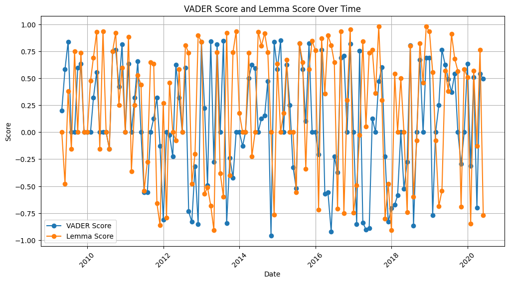
Well that graph is definitely difficult to read. Let’s try something different.
Let’s try a scatter plot for vader token score vs lemma score An insight that I am not going to go back and fix. I should have named vader score token score.
# Create a scatter plot comparing vader_score and lemma_score
plt.figure(figsize=(10, 6))
plt.scatter(df_trump_tweet_summaries['vader_score'], df_trump_tweet_summaries['lemma_score'], alpha=0.6, edgecolors='w', s=100)
# Add titles and labels
plt.title('Scatter Plot of VADER Score vs Lemma Score')
plt.xlabel('VADER Score')
plt.ylabel('Lemma Score')
plt.grid(True)
# Show the plot
plt.show()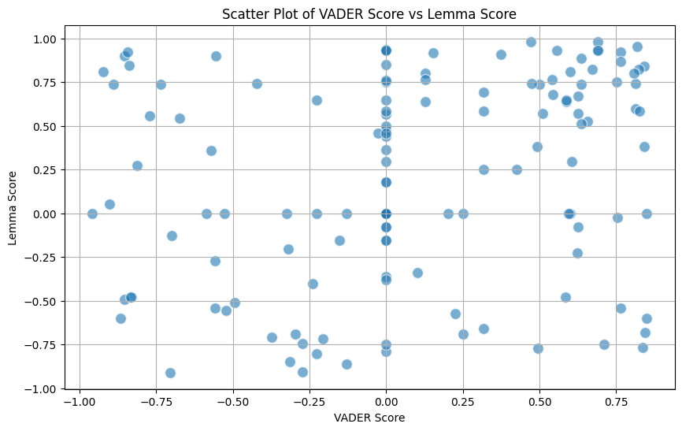
well that does not help much either. The lemma scores are quite different from the vader token score. let’s go back to the time based plot and try looking at the difference between the token and lemma score for each month
# Ensure the 'year' and 'month' columns are combined into a datetime column for plotting
df_trump_tweet_summaries['date'] = pd.to_datetime(df_trump_tweet_summaries[['year', 'month']].assign(day=1))
# Sort the DataFrame by date
df_trump_tweet_summaries = df_trump_tweet_summaries.sort_values('date')
# Calculate the absolute difference between vader_score and lemma_score
df_trump_tweet_summaries['abs_diff'] = (df_trump_tweet_summaries['vader_score'] - df_trump_tweet_summaries['lemma_score']).abs()
# Plot the absolute difference over time
plt.figure(figsize=(12, 6))
plt.plot(df_trump_tweet_summaries['date'], df_trump_tweet_summaries['abs_diff'], label='Absolute Difference', marker='o')
# Add titles and labels
plt.title('Absolute Difference Between VADER Score and Lemma Score Over Time')
plt.xlabel('Date')
plt.ylabel('Absolute Difference')
plt.legend()
plt.grid(True)
plt.xticks(rotation=45)
# Show the plot
plt.show()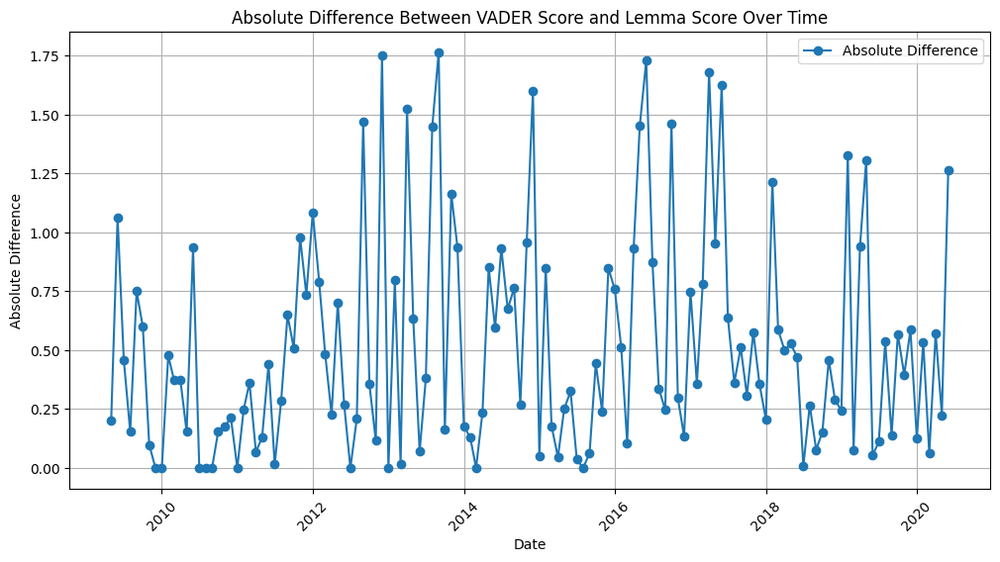
Well that is not very helpful either. There are definite differences in the scores. Before I answer question 13, I am going to do some more exploration. I am not very confident that there is much value in the summarizing of trumps tweets by month. I suspect that that is the source of the wildly different values above. I purposefully kept the Trump Tweets dataframe separate from the summary dataframe so I could examine the trump tweets in other ways. Let’s go back to the trump tweets dataframe. Here’s the first few rows again in case you forgot.
print(df_trump_tweets.head()) id link \
0 1698308935 https://twitter.com/realDonaldTrump/status/169...
1 1701461182 https://twitter.com/realDonaldTrump/status/170...
2 1737479987 https://twitter.com/realDonaldTrump/status/173...
3 1741160716 https://twitter.com/realDonaldTrump/status/174...
4 1773561338 https://twitter.com/realDonaldTrump/status/177...
content date \
0 Be sure to tune in and watch Donald Trump on L... 2009-05-04 13:54:25
1 Donald Trump will be appearing on The View tom... 2009-05-04 20:00:10
2 Donald Trump reads Top Ten Financial Tips on L... 2009-05-08 08:38:08
3 New Blog Post: Celebrity Apprentice Finale and... 2009-05-08 15:40:15
4 "My persona will never be that of a wallflower... 2009-05-12 09:07:28
retweets favorites mentions hashtags year tweet_length vader_sentiment \
0 510 917 NaN NaN 2009 117 0.5255
1 34 267 NaN NaN 2009 131 0.7712
2 13 19 NaN NaN 2009 116 0.6468
3 11 26 NaN NaN 2009 103 0.0000
4 1375 1945 NaN NaN 2009 109 0.0000
token_score lemma_score month \
0 0.026517 0.026517 5
1 0.068614 0.068614 5
2 0.044040 0.044040 5
3 0.000000 0.000000 5
4 0.000000 0.000000 5
lemmatized_content
0 sure tune watch Donald Trump Late Night David ...
1 Donald Trump appear view tomorrow morning disc...
2 Donald Trump read Financial Tips Late David Le...
3 New Blog Post Celebrity Apprentice Finale Less...
4 persona wallflower build wall cle --Donald J. ... # Ensure the 'date' column is in datetime format
df_trump_tweets['date'] = pd.to_datetime(df_trump_tweets['date'])
# Extract month and year from the 'date' column
df_trump_tweets['month'] = df_trump_tweets['date'].dt.month
df_trump_tweets['year'] = df_trump_tweets['date'].dt.year
# Group by year and month and calculate the average token_score and lemma_score
monthly_scores = df_trump_tweets.groupby(['year', 'month']).agg({
'token_score': 'mean',
'lemma_score': 'mean'
}).reset_index()
# Combine the 'year' and 'month' columns into a single 'date' column for plotting
monthly_scores['date'] = pd.to_datetime(monthly_scores[['year', 'month']].assign(day=1))
# Sort the DataFrame by date
monthly_scores = monthly_scores.sort_values('date')
# Plot the token_score and lemma_score over time
plt.figure(figsize=(12, 6))
plt.plot(monthly_scores['date'], monthly_scores['token_score'], label='Token Score', marker='o')
plt.plot(monthly_scores['date'], monthly_scores['lemma_score'], label='Lemma Score', marker='o')
# Add titles and labels
plt.title('Token Score and Lemma Score Over Time')
plt.xlabel('Date')
plt.ylabel('Score')
plt.legend()
plt.grid(True)
plt.xticks(rotation=45)
# Show the plot
plt.show()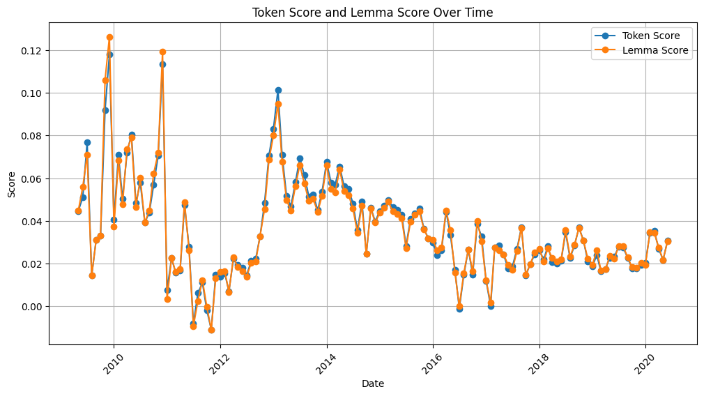
This plot is calculating the mean of the vader token score and the vader lemma score for each month. The plot above meets my expectations that the scores should not differ markedly. Thus, I suspect that something went wrong with the summarizing process.
Could it be that the topic of Trump’s tweets varys a lot during the course of a month? Could the summarizing process be missing the mark because of this? If the topics are wildly different, then I would expect summarizing to also be difficult. Whereas looking at the scores without summarizing, we see similarities.
It seems pointless to summarize tweets that are only a couple of sentences long. And grouping them together also seems to present a challenge for summarizing as there is likely several different topics involved in the tweets.
- Based on your reading of the original article, which summary do you think is better (if there’s a difference). Why do you think this might be?
I am not sure if I can answer this question. I am not sure if the summaries are of any value. Creating the summaries seemed to create data that yielded no value. The token and lemma scores from the original data were of more value. However, I cannot make a determination of whether the lemma approach or the token is approach is superior.
I suspect that the problem with summarizing this data is that the tweets in the initial dataset are of numerous different topics. The tweets span from when Trump had his own reality show until Biden’s election. Thus, the summaries from the tokens and the lemmas can result in very different results. I suspect that the summaries would be more useful if the tweets were grouped by topic. I wonder how transformer would classify the tweets. I’ll keep that in the back of my mind for future exploration.
Now, I have a few things that I want to explore using the original data. I am curious about whether the content of the dataset can show a correlation with whether the tweet will be retweeted.
let’s start by dropping the columns that are not needed
# Make a copy of the df_trump_tweets DataFrame
df_trump_tweets_predict = df_trump_tweets.copy()
# Drop the specified columns from the new DataFrame
columns_to_drop = ['id', 'link', 'month', 'year', 'lemmatized_content', 'mentions', 'hashtags', 'content']
df_trump_tweets_predict = df_trump_tweets_predict.drop(columns=columns_to_drop)
# Display the new DataFrame
print(df_trump_tweets_predict.head()) date retweets favorites tweet_length vader_sentiment \
0 2009-05-04 13:54:25 510 917 117 0.5255
1 2009-05-04 20:00:10 34 267 131 0.7712
2 2009-05-08 08:38:08 13 19 116 0.6468
3 2009-05-08 15:40:15 11 26 103 0.0000
4 2009-05-12 09:07:28 1375 1945 109 0.0000
token_score lemma_score
0 0.026517 0.026517
1 0.068614 0.068614
2 0.044040 0.044040
3 0.000000 0.000000
4 0.000000 0.000000
# Calculate the correlation matrix
correlation_matrix = df_trump_tweets_predict.corr()
# Create a heatmap
plt.figure(figsize=(12, 8))
sns.heatmap(correlation_matrix, annot=True, cmap='coolwarm', linewidths=0.5)
# Add titles and labels
plt.title('Heatmap of Correlations in df_trump_tweets_predict')
plt.show()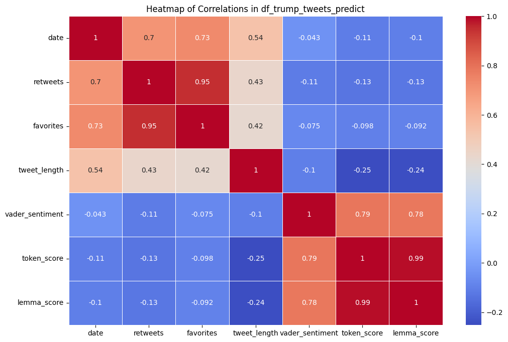
No surprises with the heatmap. There’s a very strong correlation between token score and lemma score. There’s also a very strong score between favorites and retweets. This doesn’t seem very surprising. Let’s try something different.
# Initialize the text classification pipeline with a pre-trained model
classifier = pipeline("text-classification", model="bhadresh-savani/distilbert-base-uncased-emotion")
# Function to classify a tweet
def classify_tweet(text):
classification = classifier(text)
return classification[0]['label']
# Apply the classification function to the 'content' column and create a new column 'pipeline_classification'
df_trump_tweets['pipeline_classification'] = df_trump_tweets['content'].apply(classify_tweet)
# Display the updated DataFrame
print(df_trump_tweets[['content', 'pipeline_classification']].head()) content pipeline_classification
0 Be sure to tune in and watch Donald Trump on L... joy
1 Donald Trump will be appearing on The View tom... joy
2 Donald Trump reads Top Ten Financial Tips on L... surprise
3 New Blog Post: Celebrity Apprentice Finale and... joy
4 "My persona will never be that of a wallflower... angerNow that is interesting. I wonder what I can do with those. Let’s look at how many unique values there are in the new column
# Get the unique values and their counts in the 'pipeline_classification' column
classification_counts = df_trump_tweets['pipeline_classification'].value_counts()
# Print the number of unique values
print(f"Number of unique values in 'pipeline_classification': {classification_counts.shape[0]}")
# Print the counts of each unique value
print(classification_counts)Number of unique values in 'pipeline_classification': 6
pipeline_classification
joy 24417
anger 10453
sadness 3208
fear 886
love 386
surprise 317
Name: count, dtype: int64import pandas as pd
from sklearn.preprocessing import OneHotEncoder
# Initialize the OneHotEncoder
encoder = OneHotEncoder(sparse_output=False)
# Fit and transform the 'pipeline_classification' column
one_hot_encoded = encoder.fit_transform(df_trump_tweets[['pipeline_classification']])
# Create a DataFrame with the one-hot encoded columns
one_hot_encoded_df = pd.DataFrame(one_hot_encoded, columns=encoder.get_feature_names_out(['pipeline_classification']))
# Concatenate the original DataFrame with the one-hot encoded DataFrame
df_trump_tweets_one_hot = pd.concat([df_trump_tweets, one_hot_encoded_df], axis=1)
# Drop the 'month', 'year', and 'lemmatized_content' columns
df_trump_tweets_one_hot = df_trump_tweets_one_hot.drop(columns=['month', 'year', 'lemmatized_content'])
# Display the updated DataFrame with one-hot encoded columns
print(df_trump_tweets_one_hot.head()) id link \
0 1.698309e+09 https://twitter.com/realDonaldTrump/status/169...
1 1.701461e+09 https://twitter.com/realDonaldTrump/status/170...
2 1.737480e+09 https://twitter.com/realDonaldTrump/status/173...
3 1.741161e+09 https://twitter.com/realDonaldTrump/status/174...
4 1.773561e+09 https://twitter.com/realDonaldTrump/status/177...
content date \
0 Be sure to tune in and watch Donald Trump on L... 2009-05-04 13:54:25
1 Donald Trump will be appearing on The View tom... 2009-05-04 20:00:10
2 Donald Trump reads Top Ten Financial Tips on L... 2009-05-08 08:38:08
3 New Blog Post: Celebrity Apprentice Finale and... 2009-05-08 15:40:15
4 "My persona will never be that of a wallflower... 2009-05-12 09:07:28
retweets favorites mentions hashtags tweet_length vader_sentiment \
0 510.0 917.0 NaN NaN 117.0 0.5255
1 34.0 267.0 NaN NaN 131.0 0.7712
2 13.0 19.0 NaN NaN 116.0 0.6468
3 11.0 26.0 NaN NaN 103.0 0.0000
4 1375.0 1945.0 NaN NaN 109.0 0.0000
token_score lemma_score pipeline_classification \
0 0.026517 0.026517 joy
1 0.068614 0.068614 joy
2 0.044040 0.044040 surprise
3 0.000000 0.000000 joy
4 0.000000 0.000000 anger
pipeline_classification_anger pipeline_classification_fear \
0 0.0 0.0
1 0.0 0.0
2 0.0 0.0
3 0.0 0.0
4 1.0 0.0
pipeline_classification_joy pipeline_classification_love \
0 1.0 0.0
1 1.0 0.0
2 0.0 0.0
3 1.0 0.0
4 0.0 0.0
pipeline_classification_sadness pipeline_classification_surprise
0 0.0 0.0
1 0.0 0.0
2 0.0 1.0
3 0.0 0.0
4 0.0 0.0 # Select the relevant columns for the heatmap
columns_to_include = ['retweets', 'favorites', 'token_score', 'lemma_score'] + list(one_hot_encoded_df.columns)
df_heatmap = df_trump_tweets_one_hot[columns_to_include]
# Calculate the correlation matrix
correlation_matrix = df_heatmap.corr()
# Create a heatmap
plt.figure(figsize=(12, 10))
sns.heatmap(correlation_matrix, annot=True, cmap='coolwarm', linewidths=0.5)
# Add titles and labels
plt.title('Heatmap of Correlations')
plt.show()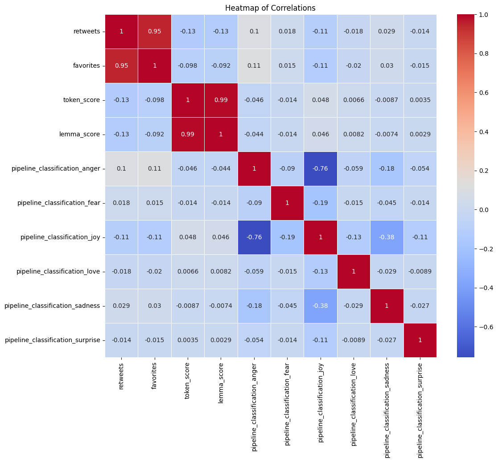
That is interesting. Some of the correlations make sense, like token score and lemma score. Retweets and favorites also makes a lot of sense. I wonder about the correlation between anger and joy though. It is a negative correlation, which I suppose make sense as the emotions are opposites.
A note: I stopped here for a while and did some reading about vader sentiment analysis and also the transformer emotion output based on distilbert
Some things that I learned. Vader does sentiment analysis; however, twitter-robertabase sentiment and twitter-robertabase emotion are specific tools for twitter data. I am curious to see how they compare. Twitter-robertabase sentiment is a binary classification of positive or negative. Twitter-robertabase emotion is a multi-class classification of 6 emotions. I am curious to see how the two compare. I am also curious to see how the two compare to vader sentiment and distillbert emotion.
# Initialize the sentiment analysis pipeline with twitter-roberta-base-sentiment
sentiment_classifier = pipeline("sentiment-analysis", model="cardiffnlp/twitter-roberta-base-sentiment")
# Function to classify the sentiment of a tweet
def classify_sentiment(text):
result = sentiment_classifier(text)
return result[0]['label'], result[0]['score']
# Apply the classification function to the 'content' column and create new columns for sentiment and score
df_trump_tweets_one_hot[['sentiment_label', 'sentiment_score']] = df_trump_tweets_one_hot['content'].apply(
lambda x: pd.Series(classify_sentiment(x))
)
# Display the updated DataFrame
print(df_trump_tweets_one_hot[['content', 'sentiment_label', 'sentiment_score']].head()) content sentiment_label \
0 Be sure to tune in and watch Donald Trump on L... LABEL_2
1 Donald Trump will be appearing on The View tom... LABEL_1
2 Donald Trump reads Top Ten Financial Tips on L... LABEL_2
3 New Blog Post: Celebrity Apprentice Finale and... LABEL_1
4 "My persona will never be that of a wallflower... LABEL_0
sentiment_score
0 0.750939
1 0.571567
2 0.762436
3 0.862625
4 0.492906 # Define the mapping from model labels to descriptive sentiment categories
label_mapping = {
'LABEL_0': 'Negative',
'LABEL_1': 'Neutral',
'LABEL_2': 'Positive'
}
# Apply the mapping to the 'sentiment_label' column
df_trump_tweets_one_hot['sentiment_label'] = df_trump_tweets_one_hot['sentiment_label'].map(label_mapping)
# The unique count of the sentiment labels
unique_sentiment_labels = df_trump_tweets_one_hot['sentiment_label'].value_counts()
print("Unique count of sentiment labels:")
print(unique_sentiment_labels)
# The statistics for the sentiment scores
mean_sentiment_score = df_trump_tweets_one_hot['sentiment_score'].mean()
median_sentiment_score = df_trump_tweets_one_hot['sentiment_score'].median()
max_sentiment_score = df_trump_tweets_one_hot['sentiment_score'].max()
min_sentiment_score = df_trump_tweets_one_hot['sentiment_score'].min()
mode_sentiment_score = df_trump_tweets_one_hot['sentiment_score'].mode()[0]
# Display the statistics
print("\nStatistics for sentiment scores:")
print(f"Mean: {mean_sentiment_score:.2f}")
print(f"Median: {median_sentiment_score:.2f}")
print(f"Max: {max_sentiment_score:.2f}")
print(f"Min: {min_sentiment_score:.2f}")
print(f"Mode: {mode_sentiment_score:.2f}")Unique count of sentiment labels:
sentiment_label
Positive 17072
Neutral 13323
Negative 12450
Name: count, dtype: int64
Statistics for sentiment scores:
Mean: 0.75
Median: 0.77
Max: 0.99
Min: 0.35
Mode: 0.53# Define the mapping from VADER scores to descriptive sentiment categories
def categorize_vader_sentiment(score):
if score <= -0.05:
return 'Negative'
elif score >= 0.05:
return 'Positive'
else:
return 'Neutral'
# Apply the categorization to the 'toekn_score' column
df_trump_tweets_one_hot['vader_sentiment_category'] = df_trump_tweets_one_hot['token_score'].apply(categorize_vader_sentiment)
# The unique count of the VADER sentiment categories
unique_vader_sentiment_categories = df_trump_tweets_one_hot['vader_sentiment_category'].value_counts()
print("Unique count of VADER sentiment categories:")
print(unique_vader_sentiment_categories)
# The statistics for the VADER sentiment scores
mean_vader_sentiment_score = df_trump_tweets_one_hot['token_score'].mean()
median_vader_sentiment_score = df_trump_tweets_one_hot['token_score'].median()
max_vader_sentiment_score = df_trump_tweets_one_hot['token_score'].max()
min_vader_sentiment_score = df_trump_tweets_one_hot['token_score'].min()
mode_vader_sentiment_score = df_trump_tweets_one_hot['token_score'].mode()[0]
# Display the statistics
print("\nStatistics for VADER sentiment scores:")
print(f"Mean: {mean_vader_sentiment_score:.2f}")
print(f"Median: {median_vader_sentiment_score:.2f}")
print(f"Max: {max_vader_sentiment_score:.2f}")
print(f"Min: {min_vader_sentiment_score:.2f}")
print(f"Mode: {mode_vader_sentiment_score:.2f}")Unique count of VADER sentiment categories:
vader_sentiment_category
Neutral 22184
Positive 15989
Negative 4672
Name: count, dtype: int64
Statistics for VADER sentiment scores:
Mean: 0.04
Median: 0.03
Max: 0.52
Min: -0.44
Mode: 0.00df_trump_tweets_one_hot.head()| id | link | content | date | retweets | favorites | mentions | hashtags | tweet_length | vader_sentiment | ... | pipeline_classification | pipeline_classification_anger | pipeline_classification_fear | pipeline_classification_joy | pipeline_classification_love | pipeline_classification_sadness | pipeline_classification_surprise | sentiment_label | sentiment_score | vader_sentiment_category | |
|---|---|---|---|---|---|---|---|---|---|---|---|---|---|---|---|---|---|---|---|---|---|
| 0 | 1.698309e+09 | https://twitter.com/realDonaldTrump/status/169... | Be sure to tune in and watch Donald Trump on L... | 2009-05-04 13:54:25 | 510.0 | 917.0 | NaN | NaN | 117.0 | 0.5255 | ... | joy | 0.0 | 0.0 | 1.0 | 0.0 | 0.0 | 0.0 | Positive | 0.750939 | Neutral |
| 1 | 1.701461e+09 | https://twitter.com/realDonaldTrump/status/170... | Donald Trump will be appearing on The View tom... | 2009-05-04 20:00:10 | 34.0 | 267.0 | NaN | NaN | 131.0 | 0.7712 | ... | joy | 0.0 | 0.0 | 1.0 | 0.0 | 0.0 | 0.0 | Neutral | 0.571567 | Positive |
| 2 | 1.737480e+09 | https://twitter.com/realDonaldTrump/status/173... | Donald Trump reads Top Ten Financial Tips on L... | 2009-05-08 08:38:08 | 13.0 | 19.0 | NaN | NaN | 116.0 | 0.6468 | ... | surprise | 0.0 | 0.0 | 0.0 | 0.0 | 0.0 | 1.0 | Positive | 0.762436 | Neutral |
| 3 | 1.741161e+09 | https://twitter.com/realDonaldTrump/status/174... | New Blog Post: Celebrity Apprentice Finale and... | 2009-05-08 15:40:15 | 11.0 | 26.0 | NaN | NaN | 103.0 | 0.0000 | ... | joy | 0.0 | 0.0 | 1.0 | 0.0 | 0.0 | 0.0 | Neutral | 0.862625 | Neutral |
| 4 | 1.773561e+09 | https://twitter.com/realDonaldTrump/status/177... | "My persona will never be that of a wallflower... | 2009-05-12 09:07:28 | 1375.0 | 1945.0 | NaN | NaN | 109.0 | 0.0000 | ... | anger | 1.0 | 0.0 | 0.0 | 0.0 | 0.0 | 0.0 | Negative | 0.492906 | Neutral |
5 rows × 22 columns
# Create a crosstab to compare VADER sentiment categories with sentiment labels
crosstab = pd.crosstab(df_trump_tweets_one_hot['vader_sentiment_category'], df_trump_tweets_one_hot['sentiment_label'])
# Plot the crosstab as a heatmap
plt.figure(figsize=(8, 6))
sns.heatmap(crosstab, annot=True, fmt='d', cmap='Blues')
plt.xlabel('Roberta Sentiment Labels')
plt.ylabel('VADER Sentiment Categories')
plt.title('Crosstab: VADER Sentiment vs Sentiment Labels')
plt.show()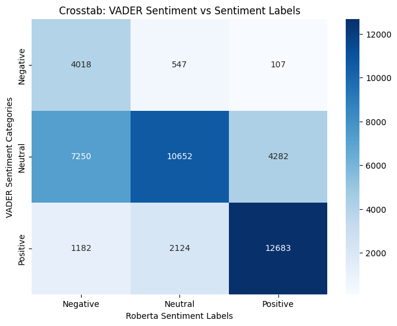
That is quite interesting. I arbitrarily defined the VADER categories. It seems that a lot of the vader ones that I labeled as neutral were picked up as positive or negative by Roberta. But for the positive and negative, both methods seem to agree. If I were to change the category cutoffs, I might be able to get better agreement.
# Initialize the emotion detection pipeline with the RoBERTa-based model
emotion_classifier = pipeline("text-classification", model="cardiffnlp/twitter-roberta-base-emotion", return_all_scores=True)
# Function to classify the emotions of a tweet
def classify_emotions(text):
results = emotion_classifier(text)
emotions = {result['label']: result['score'] for result in results[0]}
return emotions
# Apply the classification function to the 'content' column and create new columns for each emotion
emotion_results = df_trump_tweets_one_hot['content'].apply(classify_emotions)
emotion_df = pd.json_normalize(emotion_results)
# Concatenate the original DataFrame with the emotion DataFrame
df_trump_tweets_one_hot = pd.concat([df_trump_tweets_one_hot, emotion_df], axis=1)
# Display the updated DataFrame
print(df_trump_tweets_one_hot.head())/home/philip/Documents/NWMissouri/module-07-philip/.venv/lib/python3.12/site-packages/transformers/pipelines/text_classification.py:106: UserWarning: `return_all_scores` is now deprecated, if want a similar functionality use `top_k=None` instead of `return_all_scores=True` or `top_k=1` instead of `return_all_scores=False`.
warnings.warn( id link \
0 1.698309e+09 https://twitter.com/realDonaldTrump/status/169...
1 1.701461e+09 https://twitter.com/realDonaldTrump/status/170...
2 1.737480e+09 https://twitter.com/realDonaldTrump/status/173...
3 1.741161e+09 https://twitter.com/realDonaldTrump/status/174...
4 1.773561e+09 https://twitter.com/realDonaldTrump/status/177...
content date \
0 Be sure to tune in and watch Donald Trump on L... 2009-05-04 13:54:25
1 Donald Trump will be appearing on The View tom... 2009-05-04 20:00:10
2 Donald Trump reads Top Ten Financial Tips on L... 2009-05-08 08:38:08
3 New Blog Post: Celebrity Apprentice Finale and... 2009-05-08 15:40:15
4 "My persona will never be that of a wallflower... 2009-05-12 09:07:28
retweets favorites mentions hashtags tweet_length vader_sentiment ... \
0 510.0 917.0 NaN NaN 117.0 0.5255 ...
1 34.0 267.0 NaN NaN 131.0 0.7712 ...
2 13.0 19.0 NaN NaN 116.0 0.6468 ...
3 11.0 26.0 NaN NaN 103.0 0.0000 ...
4 1375.0 1945.0 NaN NaN 109.0 0.0000 ...
pipeline_classification_love pipeline_classification_sadness \
0 0.0 0.0
1 0.0 0.0
2 0.0 0.0
3 0.0 0.0
4 0.0 0.0
pipeline_classification_surprise sentiment_label sentiment_score \
0 0.0 Positive 0.750939
1 0.0 Neutral 0.571567
2 1.0 Positive 0.762436
3 0.0 Neutral 0.862625
4 0.0 Negative 0.492906
vader_sentiment_category joy optimism anger sadness
0 Neutral 0.020737 0.895202 0.071220 0.012842
1 Positive 0.046025 0.713383 0.223212 0.017381
2 Neutral 0.016363 0.956548 0.017659 0.009431
3 Neutral 0.027084 0.814254 0.135028 0.023634
4 Neutral 0.167143 0.018758 0.730502 0.083598
[5 rows x 26 columns]df_trump_tweets_one_hot.info()<class 'pandas.core.frame.DataFrame'>
Index: 43311 entries, 0 to 42844
Data columns (total 26 columns):
# Column Non-Null Count Dtype
--- ------ -------------- -----
0 id 39667 non-null float64
1 link 39667 non-null object
2 content 42845 non-null object
3 date 39667 non-null datetime64[ns]
4 retweets 39667 non-null float64
5 favorites 39667 non-null float64
6 mentions 19216 non-null object
7 hashtags 4116 non-null object
8 tweet_length 39667 non-null float64
9 vader_sentiment 39667 non-null float64
10 token_score 39667 non-null float64
11 lemma_score 39667 non-null float64
12 pipeline_classification 39667 non-null object
13 pipeline_classification_anger 39667 non-null float64
14 pipeline_classification_fear 39667 non-null float64
15 pipeline_classification_joy 39667 non-null float64
16 pipeline_classification_love 39667 non-null float64
17 pipeline_classification_sadness 39667 non-null float64
18 pipeline_classification_surprise 39667 non-null float64
19 sentiment_label 42845 non-null object
20 sentiment_score 42845 non-null float64
21 vader_sentiment_category 42845 non-null object
22 joy 42845 non-null float64
23 optimism 42845 non-null float64
24 anger 42845 non-null float64
25 sadness 42845 non-null float64
dtypes: datetime64[ns](1), float64(18), object(7)
memory usage: 8.9+ MB# Define the pipeline classification categories and RoBERTa emotion categories
pipeline_categories = ['pipeline_classification_anger', 'pipeline_classification_fear', 'pipeline_classification_joy', 'pipeline_classification_love', 'pipeline_classification_sadness', 'pipeline_classification_surprise']
roberta_emotion_categories = ['joy', 'optimism', 'anger', 'sadness']
# Select the relevant columns for correlation
columns_to_include = pipeline_categories + roberta_emotion_categories
df_correlation = df_trump_tweets_one_hot[columns_to_include]
# Calculate the correlation matrix
correlation_matrix = df_correlation.corr()
# Plot the correlation matrix as a heatmap
plt.figure(figsize=(12, 8))
sns.heatmap(correlation_matrix, annot=True, cmap='coolwarm', center=0)
plt.title('Correlation Matrix: Pipeline Classification (DistilBERT) vs RoBERTa Emotion Categories')
plt.show()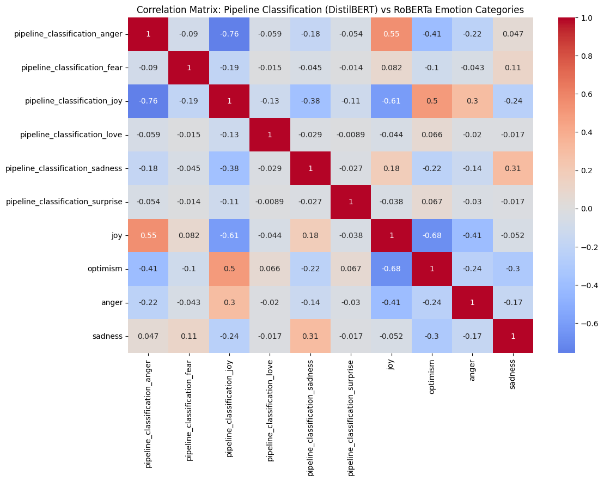
I am not sure what to say here. There are a number of things that I think are questionable. Why is DistilBERT’s joy classification negatively correlated with RoBERTa’s Joy? Why is DistilBERT’s anger positively correlated with RoBERTa’s joy?
Overall Summary
So what have I learned here? I selected the wrong dataset to get something useful out of summarizing. I should have selected a dataset that was more focused on a single topic. A list of tweets was not a good choice.
I tried two different approaches to determining the sentiment of the tweets. DistillBERT and VADER. THe results weren’t directly comparable. However, the results were similar.
I also tried two different approaches to determining the emotion of the tweets. DistillBERT and RoBERTa. The results left me with some uncertainty. Having a negative correlation between joy and joy seems odd. I am not sure what to make of that.